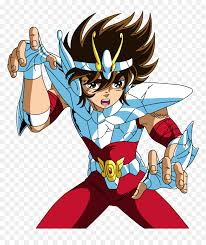
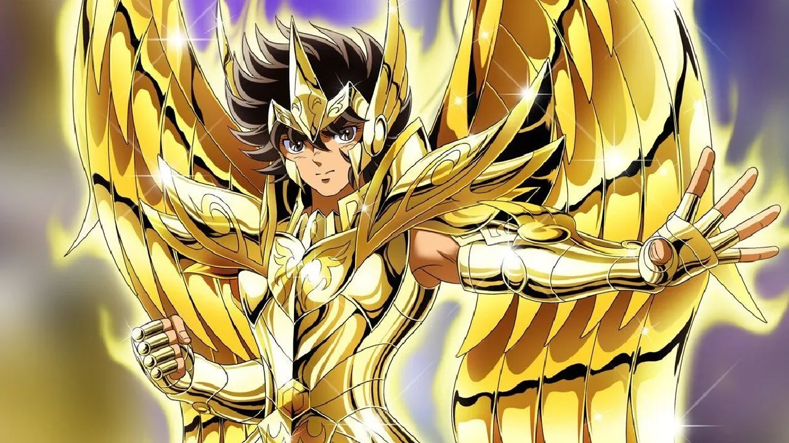
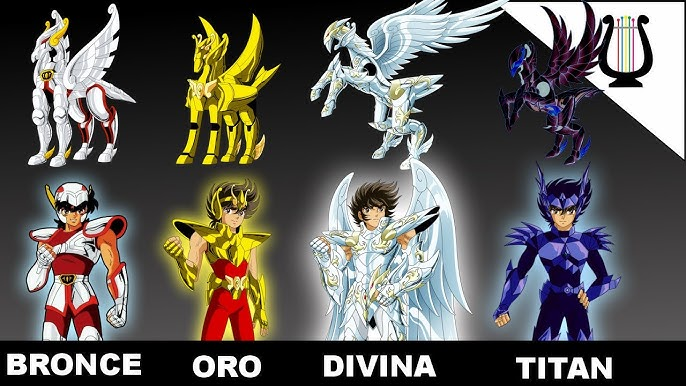
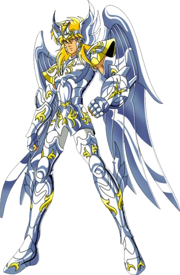
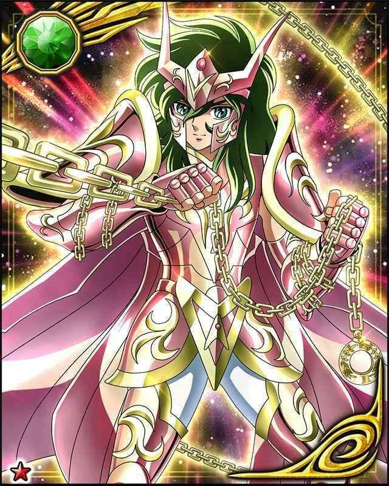
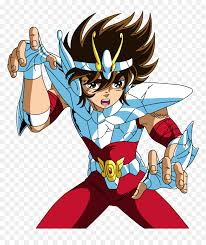
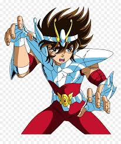

vistiendo la poderosa armadura DORADA de ZAGITARIO
su verdadero portador fue el caballero "AIOROS"
quien sacrifico su vida en pro de la justicia

Seiya de Pegaso:
Es el personaje principal del popular manga y anime conocido como Saint Seiya o Los Caballeros del Zodiaco. Es un joven guerrero (Caballero de Bronce) que lucha al servicio de la diosa griega Atenea (Saori Kido reencarnada) para proteger la Tierra de las fuerzas del mal.
Características clave: Armadura de Pegaso: Seiya viste la armadura (o "Cloth") de bronce de la constelación de Pegaso, la cual obtiene tras un riguroso entrenamiento en el Santuario de Grecia.
Reencarnación: Seiya es la reencarnación del Caballero de Pegaso mitológico original, quien, en la Era Mitológica, fue el único mortal que logró herir el cuerpo divino del dios Hades.
Cosmos: Al igual que otros caballeros, Seiya utiliza su energía interior, conocida como "cosmos", para potenciar sus habilidades de combate y realizar ataques especiales.
Técnicas principales: Su ataque más reconocido es el "Puño de Meteoro de Pegaso" (Pegasus Ryūsei Ken), que lanza cien golpes por segundo a velocidades cercanas a Mach 1.
Lealtad y destino: Es ferozmente leal a Atenea y su destino está ligado al de la diosa, reencarnando juntos en cada Guerra Santa para guiarla a la victoria.
Historia personal: Huérfano de nacimiento, su principal motivación inicial tras obtener su armadura es encontrar a su hermana desaparecida, Seika.
Seiya es una figura legendaria en el universo de Saint Seiya, reconocido por su valentía y su capacidad para luchar y, a menudo, vencer a deidades, lo que le ha valido el apodo de "asesino de dioses"
 
Los 5 caballeros lejendarios
Breve descripcion
La Armadura Divina de Pegaso (神聖衣, God Cloth) es la forma mas poderosa y evolucionada de la armadura de bronce de Seiya. Aparece en momentos cruciales, principalmente en la Saga de Hades, cuando la armadura de Pegaso es bañada con la sangre de la diosa Atenea y el cosmos de Seiya arde hasta niveles divinos, superando el octavo sentido.
caracteristicas PrincipalesOrigen Mitico: Las Armaduras Divinas (God Cloths) existen desde la Era del Mito y son consideradas el pinaculo de la evolucion de las armaduras de Atenea, solo por debajo de las Kamuis (las armaduras de los Dioses del Olimpo).
La Armadura Divina de Shiryu del Dragon (o God Cloth del Dragon) es la forma mas poderosa de su armadura de bronce, que obtiene al elevar su cosmos al extremo, cercano al nivel de los dioses.
Caracteristicas Principales Origen y Aparicion:
Esta armadura aparece en la saga de Hades, especificamente en el Eliseo, cuando los Caballeros de Bronce principales logran despertar el "Octavo Sentido" y elevan su cosmos gracias a la sangre de Atenea y la ayuda de Poseidon.
Apariencia: A diferencia de sus versiones anteriores, la Armadura Divina es predominantemente dorada brillante, aunque conserva el color azul/verde original en algunos detalles, haciendo referencia al dragon azul oriental (Seiryu) que representa.
Diseno Detallado:
Presenta un diseno mucho mas ornamentado y majestuoso, con alas en la espalda que le permiten volar en la dimension de los dioses.
Las hombreras son mas grandes y detalladas, a menudo con garras pronunciadas.
El casco o diadema es más complejo, con detalles que evocan la cabeza de un dragon.
El iconico escudo del Dragon en el brazo izquierdo se mantiene, con un aspecto mejorado y filos dorados

La Armadura Divina de Cisne (Cygnus God Cloth) es la forma mas poderosa de la armadura de Hyoga, que adquiere durante la Saga de Hades en los Campos Elíseos. Esta armadura especial evoluciona cuando es bañada por la sangre de la diosa Atenea y su portador eleva su cosmos a niveles extremos, cercanos al de un dios.
Caracteristicas y HabilidadesApariencia y Diseno: A diferencia de las armaduras divinas de Pegaso y Dragon, que cambian drasticamente, la de Cisne mantiene la forma iconica del ave en su diseno, incluyendo las alas que permiten volar y la mascara con forma de pico. Presenta tonos azules y blancos con un brillo satinado.
Poder y Proteccion: La Armadura Divina otorga un nivel de proteccion casi absoluto y una durabilidad inmensa, cubriendo la mayor parte del cuerpo de Hyoga.
Dominio del Hielo: Con esta armadura, las tecnicas de hielo de Hyoga alcanzan su maximo potencial, superando el Cero Absoluto. Sus ataques, como el Polvo de Diamantes y la Ejecucion de Aurora, se vuelven devastadores a niveles cosmicos.
Hyoga obtiene la armadura divina junto a Shiryu en los Campos Eliseos, despues de que sus armaduras de bronce fueran destruidas por Tanatos, el dios de la Muerte. La sangre de Atenea, que habian recibido previamente para reparar sus armaduras, despierta el potencial divino de estas cuando Hyoga eleva su cosmos al maximo, permitiendole enfrentarse y finalmente vencer a Hypnos, el dios del Sueño, junto a Shun.

La Armadura Divina de Andromeda(Andromeda God Cloth) es la forma final y mas poderosa de la armadura de bronce de Shun, que aparece en la Saga de Hades, especificamente en los Campos Eliseos.
Caracteristicas principales: Origen: La armadura de Andromeda evoluciona a su estado divino cuando Shun quema su cosmos al maximo nivel, comparable al de los dioses, despues de que las armaduras doradas fueran destruidas.
Diseno: A diferencia de sus versiones anteriores, esta armadura cubre una mayor parte del cuerpo y adquiere un brillo metalico intenso, similar al oro, aunque mantiene su color verde caracteristico.
Alas: Una caracteristica distintiva de las armaduras divinas de bronce (vistas en el anime) es la aparicion de alas en la espalda, que permiten al portador volar en la hiperdimension y los Campos Eliseos.
Cadenas de Andromeda: Las legendarias cadenas de Andromeda, conocidas por su durabilidad y naturaleza defensiva, se integran en esta forma divina, conservando su capacidad para extenderse a distancias enormes y descargar potentes choques electricos.
Poder: Esta es una de las armaduras mas poderosas de la serie, superando con creces a las armaduras de plata e incluso a las de oro estandar, debido a que esta imbuida con un cosmos divino
La Armadura Divina del Fenix
(God Cloth) es una versión unica y extremadamente poderosa de la armadura de bronce de Ikki, que existe desde la Era de los Mitos. Esta armadura no es la version estandar, sino una transformacion que Ikki logra en momentos criticos de la serie Saint Seiya (específicamente en la Saga de Hades en los Campos Eliseos).
Detalles Clave Origen y Activacion: A diferencia de las armaduras divinas de Seiya y los demas (que fueron bañadas con la sangre de Atenea de antemano), la armadura de Ikki se transforma en su version divina de manera mas espontanea. En los Campos Eliseos, los restos de su armadura de bronce, que siempre se regenera, reaccionaron al cosmos moribundo y la sangre de Atenea esparcida en el ambiente, permitiendole despertar su forma divina para enfrentarse al dios Tánatos.
Poder y Habilidades: Como armadura divina, el poder de Ikki se eleva exponencialmente, permitiendole luchar al nivel de los dioses gemelos (Tanatos e Hipnos) y mas tarde, en el manga Next Dimension, enfrentarse a oponentes de poder divino como Asclepios. La armadura mantiene la habilidad unica de regenerarse de la destruccion, que es su caracteristica principal, pero a un nivel divino.
Diseno: La Armadura Divina del Fenix es una versión mas elaborada y brillante de su armadura final de bronce (V4), con alas grandes y detalladas que le permiten volar por los Campos Eliseos, y un diseno mas cercano a la figura mitologica del Fenix. Es predominantemente plateada con detalles naranjas y dorados.
En resumen, la Armadura Divina del Fenix es el pinaculo del poder de Ikki, manifestada a traves de su inquebrantable voluntad de lucha y un cosmos elevado al extremo, en contacto con la sangre divina de Atenea.
OPENNING DE SAINT SEIYA Audio Latino
SAGA DE HADES EN ESPAÑOL LATINO COMPLETA HASTA EL FINAL 2025 #viralvideo #viralvideos
 
